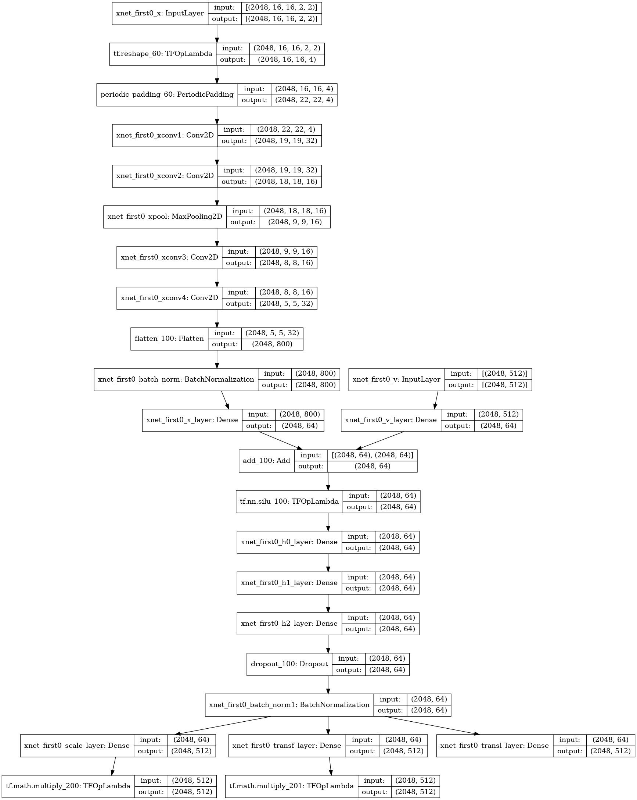

<!DOCTYPE html>
<html lang="en">
  <head>
    <meta charset="utf-8" />
    <meta name="viewport" content="width=device-width, initial-scale=1.0, maximum-scale=1.0, user-scalable=no" />

    <title>l2hmc-qcd -- DWQ @ 25</title>
    <link rel="shortcut icon" href="./favicon.ico"/>
    <link rel="stylesheet" href="./dist/reveal.css" />
    <link rel="stylesheet" href="./dist/theme/white.css" id="theme" />
    <link rel="stylesheet" href="./css/highlight/github.css" />
    <link rel="stylesheet" href="./_assets/custom/custom_theme.css" />

  </head>
  <body>
    <div class="reveal">
      <div class="slides"><section  data-markdown><script type="text/template">

<!-- .slide: data-background="#1c1c1c" -->

<div id='dark'>

&nbsp;

### Accelerated Sampling Techniques
#### for Lattice Gauge Theory

[BNL &amp; RBRC: "DWQ @ 25"](https://indico.bnl.gov/event/13576/)
<br>
December, 2021
<br>
<br>

#### [**Sam Foreman**](https://www.samforeman.me)

<br>

<small>[1] [arXiv: 2105.03418](https://arxiv.org/abs/2105.03418), 
   [2] [arXiv: 2112.01582](https://arxiv.org/abs/2112.01582), 
 [3] [arXiv: 2112.01586](https://arxiv.org/abs/2112.01586)</small>
</small>

[](https://github.com/saforem2/l2hmc-qcd)

[](https://alcf.anl.gov)

</div>
</script></section><section  data-markdown><script type="text/template"><!-- .slide: data-background="#1c1c1c" -->

<div id='dark' style="vertical-align:center;">

# Motivation

- Want to calculate observables

  $$ \langle \mathcal{O}\rangle\propto\int\left[\mathcal{D}x\right]\mathcal{O}(x)e^{-S(x)} $$

- If we had <span id="red">_independent configurations_,</span> we could approximate the integral as
  $$ \langle\mathcal{O}\rangle\simeq\frac{1}{N}\sum_{n=1}^{N}\mathcal{O}(x_{n})\Rightarrow \sigma^{2}=\frac{1}{N}\text{Var}\left[\mathcal{O}(x)\right] $$

</div>
</script></section><section  data-markdown><script type="text/template"><!-- .slide: data-background="#1c1c1c" -->

<div id='dark'>

# Motivation

<span style="font-size:0.8em;">

- For independent samples: 
  $$\langle \mathcal{O}\rangle \propto\int\left[\mathcal{D}x\right]\mathcal{O}(x)e^{-S(x)}
  \simeq\frac{1}{N}\sum_{n=1}^{N}\mathcal{O}(x_{n})$$
  $$\Rightarrow \sigma^{2}=\frac{1}{N}\text{Var}\left[\mathcal{O}(x\right)]$$
- Accounting for <span id="blue">autocorrelations</span>:
  $$ \sigma^{2}=\frac{\color{#228BE6}{\tau_{\mathrm{int}}^{\mathcal{O}}}}{N}\text{Var}\left[\mathcal{O}(x)\right] $$
- <span id="blue">$\tau_{\mathrm{int}}^{\mathcal{O}}$</span> is known to scale <span
  id="red">exponentially</span> as we approach physical lattice spacing.

</span>

</div>
</script></section><section  data-markdown><script type="text/template"><!-- .slide: data-background="#1c1c1c" -->

<div id='dark'>

# Motivation

<!-- - The ability to efficiently sample from complicated sampling from complicated distributions is a widely studied  -->
- Generating independent configurations is currently a major bottleneck for
  lattice QCD.

- As the lattice spacing $a\rightarrow 0$ (or equivalently, $\beta \rightarrow \infty$),
  configurations get stuck in sectors of fixed gauge topology. 

  - Causes $\tau_{\mathrm{int}}$ to grow exponentially

  

</div>
</script></section><section  data-markdown><script type="text/template"><!-- .slide: data-background="#1c1c1c" -->

<div id='dark'>

# <span style="color: #3B4CC0;">Critical Slowing Down</span>

<div class="row">

<div class="column" style="width: 50%; font-size: 100%;text-align:left;align:right">

<h4><span style="color:#7B9FF9;">Charge Freezing</span></h4>

  - $Q$ gets stuck!

  - As <span id="red"> $\beta\longrightarrow \infty$</span>:

  <div style="text-align:center;">

  <span id="note" style="color:rgb(255,255,255);background-color:rgba(255,255,255,0.15);padding:5px;">$Q
  \longrightarrow \text{ const.}$</span>

  </div>

- \# configs required to estimate errors **grows exponentially** 

  <div style="text-align:center;">

  <span id="note" style="color:rgb(255,82,82);background-color:rgba(255,255,255,0.15);padding:14px;"> $\tau_{\mathrm{int}}^{Q} \longrightarrow \infty$ </span>

  </div>

</div>

<div class="column" style="width: 50%;">


</div>

</div>

</div>
</script></section><section  data-markdown><script type="text/template"><!-- .slide: data-background="#1c1c1c" -->

<div id='dark'>

### HMC: Leapfrog Integrator

  <!-- .element width="90%" -->

<iframe data-src="https://chi-feng.github.io/mcmc-demo/app.html"></iframe> <!-- .element width="80%" height="220px" -->

</div>
</script></section><section  data-markdown><script type="text/template"><!-- .slide: data-background="#1c1c1c" -->

<div id='dark'>

# Issues with HMC
	
- Energy levels selected randomly $\rightarrow$ slow mixing!
- Cannot easily traverse low-density zones
- What do we want in a good sampler?
  - <span id="cyan">**Fast mixing**</span> (small autocorrelations) 
  - <span id="cyan">**Fast burn-in**</span> (quick convergence)
  - Ability to mix across energy levels and isolated modes

 <!-- .element width="49%" -->
 <!-- .element width="49%" -->

</div>
</script></section><section  data-markdown><script type="text/template"><!-- .slide: data-background="#1c1c1c" -->

<div id='dark'>


## Toy Example: GMM $\in \mathbb{R}^{2}$


</div>
</script></section><section  data-markdown><script type="text/template"><!-- .slide: data-background="#1c1c1c" -->

<div id='dark'>

## Leapfrog Layer

<div id="left" style="width:38%; align:center; font-size:0.60em; text-align: left;">

#### <span id="bright"><u>L2HMC Update:</u></span>
1. Update $\mathbf{v}$:

    - `\(\mathbf{v}'= \Gamma^{\pm}[\mathbf{v}; \zeta_{\mathbf{v}}]\)`

2. Update half of `\(\mathbf{x}\)` via <span id="red"> `\(\mathbf{x}_{\bar{m}}\)`</span>:

    - `\(\mathbf{x}' = \)` <span id="blue">`\(\mathbf{x}_{m} \)`</span>`\(+ \Lambda^{\pm}[\)`<span id="red">`\(\mathbf{x}_{\bar{m}}\)`</span>`\(; \zeta_{\mathbf{x}}]\)`

3. Update (other) half of `\(\mathbf{x}\)` via <span id="blue"> `\(\mathbf{x}_{m}'\)`</span> :

    - `\(\mathbf{x}'' = \)` <span id="red">`\(\mathbf{x}_{\bar{m}} \)`</span>`\(+ \Lambda^{\pm}[\)`<span id="blue">`\(\mathbf{x}_{m}'\)`</span>`\(; \zeta_{\mathbf{x}'}]\)`

4. Update $\mathbf{v}$:

    - `\(\mathbf{v}''= \Gamma^{\pm}[\mathbf{v}'; \zeta_{\mathbf{v}'}]\)`

</div>

<br>

 <!-- .element width="60%" -->
 <!-- .element width="100%" align="center" -->
<!--  <!-- .element width="100%" align="center" --> -->

</div>
</script></section><section  data-markdown><script type="text/template"><!-- .slide: data-background="#1c1c1c" -->

<div id='dark'>

## L2HMC Update

<div class="column">

 <!-- .element width="39%" align="center" -->
 <!-- .element width="60%" align="center"-->
 <!-- .element width="100%" align="center" -->

</div>
</script></section><section  data-markdown><script type="text/template"><!-- .slide: data-background="#1c1c1c" -->

<div id='dark'>

## Training Step

<div class="column" style="width=100%;font-size:0.77em;">

1. Resample $\mathbf{v} \sim \mathcal{N}(0, \mathbb{1})$, $d\sim\mathcal{U}(+, -)$, 
   construct <span id="cyan">$\xi = (\mathbf{x}, \mathbf{v}, \pm)$</span>

2. Generate <span style="color:#AE81FF;">proposal $\xi^{\ast}$</span> by passing <span id="cyan">initial
   $\xi$</span> through $N_{\mathrm{LF}}$ **leapfrog
   layers**:

   <div id="note" style="width:65%;color:rgb(255, 255, 255);background-color:rgba(255, 255, 255, 0.1);text-align:center;padding:5px;">

   <span id="cyan">$\xi$</span> $ \hspace{1pt}\xrightarrow[]{\tiny{\mathrm{LF} \text{ layer}}}\xi_{1} \longrightarrow\cdots \longrightarrow \xi_{N_{\mathrm{LF}}} =$ <span style="color:#AE81FF;">$\xi^{\ast}$</span>

   </div>

3. Compute the **Metropolis-Hastings** (MH) acceptance (with Jacobian
   $\mathcal{J}$) 

   <div id="note" style="width:65%;align:center;text-align:center;padding:5px; color:rgb(255,255,255);background-color:rgba(255,255,255,0.1);padding:5px;">

   $A(\color{#AE81FF}{\xi^{\ast}}|\color{#00CCFF}{\xi})=
   \mathrm{min}\left\\{1,
   \frac{p(\color{#AE81FF}{\xi^{\ast}})}{p(\color{#00CCFF}{\xi})}\mathcal{J}\left(\color{#AE81FF}{\xi^{\ast}},\color{#00CCFF}{\xi}\right)\right\\}$

   </div>

4. Evaluate the **loss function** $\mathcal{L}\gets
   \mathcal{L}_{\theta}(\color{#AE81FF}{\xi^{\ast}}, \color{#00CCFF}{\xi})$ and backpropagate gradients

5. Evaluate MH criteria and assign the next state in the chain according to

   <div id="note" style="width:65%;align:center;text-align:center;padding:5px; color:rgb(255,255,255);background-color:rgba(255,255,255,0.15);padding:5px;">

   $\mathbf{x}_{i+1}\gets
   \begin{cases}
     \color{#AE81FF}{\mathbf{x}^{\ast}} \small{\text{ with prob }} A(\color{#AE81FF}{\xi^{\ast}}|\color{#00CCFF}{\xi}) \hspace{25pt}✅ \\\\
     \color{#00CCFF}{\mathbf{x}} \hspace{14px}\small{\text{ with prob }} 1 - A(\color{#AE81FF}{\xi^{\ast}}|\color{#00CCFF}{\xi}) \hspace{10pt}❌ 
     \end{cases}$

   </div>

</div>

</div>
</script></section><section  data-markdown><script type="text/template"><!-- .slide: data-background="#1c1c1c" -->

<div id='dark'>

## Lattice Gauge Theory

<div class="row">

<div class="column" style="width: 65%; font-size: 90%; align:right;">

- <h4><b><u> Link variables</u></b></h4>
   $U_{\mu}(x) = e^{i x_{\mu}(n)}\in U(1)$,

   with <span id="note" style="color:rgb(255,255,255);background-color:rgba(255,255,255,0.1);padding:5px;">$x_{\mu}(n)\in[-\pi,\pi]$</span>

- <h4><b><u> Wilson Action</u></b></h4>

  <span id="note"
  style="color:rgb(255,255,255);padding:5px;background:rgba(255,255,255,0.15);"> $S_{\beta}(x)
  = \beta\sum_{P} 1 - \cos x_{P}$</span>

  <span id="cyan" style="font-size:0.65em;align:right;">$x_{P}= x_{\mu}(n) + x_{\nu}(n+\hat{\mu})-x_{\mu}(n+\hat{\nu})-x_{\nu}(n)$</span>

- <h4><b><u> Topological Charge</U></b></h4>

</div>

<div class="column" style="width:30%;vertical-align:center;">

  <!-- .element align="center" width="90%"-->

</div>

</div>

<div style="align=center;">

<span id="green">**Continuous:**</span> $\hspace{2pt}$ <span id="note" style="padding:8px;background:#D0F3D5;color:#1c1c1c;">✅ $Q_{\mathbb{R}} = \frac{1}{2\pi}\sum_{P} \sin x_{P}\in\mathbb{R}$ </span>

$\hspace{10pt}$ <span id="red"> **Discrete:**</span>$\hspace{4pt}$ <span id="note" style="padding:8px;background:#F7C2CC;color:#1c1c1c;text-align:right;">❌ $Q_{\mathbb{Z}} = \frac{1}{2\pi}\sum_{P} \left\lfloor x_{P}\right\rfloor\hspace{18px}\in\mathbb{Z}$</span>

  $\hspace{45pt}$ with $\left\lfloor x_{P}\right\rfloor = x_{P}-2\pi\left\lfloor\frac{x_{P}+\pi}{2\pi}\right\rfloor$</span>

</div>


  <!-- <span id="note" style="padding:8px;background:rgba(232, 245, 233,0.8);color:rgb(76, 175, 80);">✅ $Q_{\mathbb{R}} = \frac{1}{2\pi}\sum_{P} \sin x_{P}\in\mathbb{R}$ </span> -->

  <!-- <span id="note" style="padding:8px;background:rgba(255, 235, 238,0.8);color:rgb(244, 67, 54);align:right;">❌ $Q_{\mathbb{Z}} = \frac{1}{2\pi}\sum_{P} \left\lfloor x_{P}\right\rfloor\hspace{18px}\in\mathbb{Z}$</span> -->


</div>
</script></section><section  data-markdown><script type="text/template"><!-- .slide: data-background="#1c1c1c" -->

<div id='dark'>

#### Integrated Autocorrelation time: <span style="color:#FF2052">$\tau_{\mathrm{int}}$</span>

 <!-- .element width="90%" -->

<div class="row">

<div class="column">

 <!-- .element align="center" width="85%" -->

</div>

<div class="column" align="left">

We can measure the performance by comparing $\tau_{\mathrm{int}}^{Q}$ for the
<span style="color:#FF2052">**trained model**</span> to <span
style="color:#9F9F9F;">**HMC**</span>.

</div>
</div>

 <!-- .element width="90%" -->

</div>
</script></section><section  data-markdown><script type="text/template"><!-- .slide: data-background="#1c1c1c" -->

<div id="dark">

### Integrated Autocorrelation Time


  <!-- .element width="100%" -->

Comparison of $\tau_{\mathrm{int}}^{Q}$ for <span
style="color:#5BC461;">**trained models** </span> vs <span
style="color:#9F9F9F;">**HMC** </span> with different trajectory lengths,
$N_{\mathrm{LF}}$, at $\beta = 4, 5, 6, 7$

</div>
</script></section><section  data-markdown><script type="text/template">
<!-- .slide: data-background="#1c1c1c" -->

<div id="dark">

# Interpretation


<div class="row">

<div class="column" style="width:36%; align:center;">
<small>

Deviation in $x_{P}$

</small>
</div>

<div class="column" style="width:34%; align:right;">
<small>

Topological charge mixing $Q_{\mathbb{R}}$

</small>
</div>

<div class="column" style="width:25%; align:right;">
<small>

Artificial influx of energy

</small>
</div>

</div>

<br>
<b>Fig.</b> Illustration of how different observables evolve over a
single L2HMC trajectory.
</small>

</div>
</script></section><section  data-markdown><script type="text/template"><!-- .slide: data-background="#1c1c1c" -->

<div id="dark">

## $x_{P}$ analysis

- We can look at how the average plaquette $x_{P}$ behaves for different
  trajectory lengths, $N_{\mathrm{LF}}$

 <!-- .element width="100%" -->

<div id="left" style="align:left;">
<small>

- The deviation $\langle x_{P} - x_{P}^{\ast}\rangle$ of $x_{P}$ from the
  $V\rightarrow\infty$ limit, $x_{P}^{\ast}$ vs trajectory length
  $N_{\mathrm{LF}}$

</small>
</div>

<div id="right" style="align:right;">
<small>

- Average plaquette $\langle x_{P}\rangle$ vs trajectory length
  $N_{\mathrm{LF}}$ with $x_{P}^{\ast}$ indicated by dashed lines

</small>
</div>


</div>
</script></section><section  data-markdown><script type="text/template"><!-- .slide: data-background="#1c1c1c" -->

<div id="dark">

# [](https://github.com/saforem2/l2hmc-qcd) [l2hmc-qcd](https://github.com/saforem2/l2hmc-qcd)

- [arXiv: 2105.03418](https://arxiv.org/abs/2105.03418)
- [arXiv: 2112.01582](https://arxiv.org/abs/2112.01582)
- [arXiv: 2112.01586](https://arxiv.org/abs/2112.01586)

- Source code publicly available

- Both `pytorch` and `tensorflow` implementations with support for distributed training, automatic checkpointing, etc.

- Generic interface, easily extensible

- <b>Work in progress</b> scaling up to 2D, 4D $SU(3)$

</div>
</script></section><section  data-markdown><script type="text/template"><!-- .slide: data-background="#1c1c1c" -->

<div id="dark">

## Non-Compact Projection 
<small>[arXiv:2002.02428](https://arxiv.org/abs/2002.02428)</small>

<div style="font-size:0.8em;">

- Project $x \in[-\pi, \pi]$ onto $\mathbb{R}$ using a transformation $z = g(x)$:
  $$ z = \tan\left(\frac{x}{2}\right) $$
- Perform the update in $\mathbb{R}$:
  $$ z' = m^{t}\odot z + \bar{m}^{t}\odot \left[\alpha z + \beta\right]$$
- Project back to $[-\pi, \pi]$ using $x = g^{-1}(z)$:
  $$ x = 2 \tan^{-1}(z) $$

</div>

</div>
</script></section><section  data-markdown><script type="text/template"><!-- .slide: data-background="#1c1c1c" -->

<div id="dark">

## Non-Compact Projection
<small>[arXiv:2002.02428](https://arxiv.org/abs/2002.02428)</small>

- Combine into a single update:
  $$ x' = \color{#228BE6}{m^{t}}\odot x +
  \color{#FA5252}{\bar{m}^{t}}\odot\left[2\tan^{-1}\left(\alpha\tan\left(\frac{x}{2}\right)\right)+\beta\right]
  $$
- With corresponding Jacobian:
  $$ \frac{\partial x'}{\partial x} = \frac{\exp(\varepsilon s_{x})}{\cos^{2}(x/2)+exp(2\varepsilon s_{x})\sin(x/2)} $$


</div>
</script></section><section  data-markdown><script type="text/template"><!-- .slide: data-background="#1c1c1c" -->

<div id="dark">

## Acknowledgements

<div id="left">

### Collaborators:
 - Xiao-Yong Jin
 - James C. Osborn

### References:
 - [Link to slides](https://bit.ly/l2hmc-ect2021)
 - [Link to github](https://github.com/saforem2/l2hmc-qcd)
 - [reach out!](mailto://foremans@anl.gov)
 - [Link to HMC demo](https://chi-feng.github.io/mcmc-demo/app.html)
 - [arXiv:2105.03418](https://arxiv.org/abs/2002.02428)
 - [arXiv:2002.02428](https://arxiv.org/abs/2002.02428)

</div>

<div id="right">

### Huge thank you to:
 - Yannick Meurice
 - Norman Christ
 - Akio Tomiya
 - Luchang Jin
 - Chulwoo Jung
 - Peter Boyle
 - Taku Izubuchi
 - ECP-CSD group
 - ALCF Staff + Datascience Group

</div>

<small> 

<br>

This research used resources of the Argonne Leadership Computing Facility,
which is a DOE Office of Science User Facility supported under Contract
DE-AC02-06CH11357.

</small>

</div>
</script></section><section  data-markdown><script type="text/template"><!-- .slide: data-background="#1c1c1c" -->

<div id="dark">


### Network Architectures



</div>
</script></section><section  data-markdown><script type="text/template"><!-- .slide: data-background="#1c1c1c" -->

<div id="dark">


### Network Architectures


</div>
</script></section><section  data-markdown><script type="text/template"><style>

:root {
    --r-heading-text-transform: none;
    --r-block-margin: 20px;
    --r-heading-margin: 0 0 20px 0;
    --r-heading-font: "OpenSans-Bold", "Open Sans", Helvetica, Impact, sans-serif;
    --r-main-font-size: 38px;
    --r-block-margin: 10px;
    --r-heading-margin: 0 0 20px 0;
    --r-heading-line-height: 1.2;
    --r-heading-letter-spacing: -0.45px;
    --r-heading-word-spacing: 0.5px;
    --r-heading-text-transform: none;
    --r-heading-text-shadow: none;
    --r-heading-font-weight: 800;
    --r-heading1-text-shadow: none;
    --r-heading1-size: 2.0em;
    --r-heading2-size: 1.5em;
    --r-heading3-size: 1.20em;
    --r-heading4-size: 1.15em;
    --r-heading5-size: 1.10em;
    --r-heading6-size: 1.05em;
    --r-code-font: "agave Nerd Font", monospace;
    --r-link-color: #007DFF;
    --r-link-color-dark: #f92672;
    --r-link-color-hover: #63ff51;
    --r-controls-color: #228BE6;
    --r-progress-color: #404040;
    --r-selection-background-color: rgba(255, 255, 0, 0.15);
    --r-selection-color: rgb(255, 255, 0);
    --r-main-color: #222;
    --r-heading-color: #222;
    --r-background-color: #fff;
    -webkit-font-smoothing:subpixel-antialiased;
}

.reveal {
    font-family: var(--r-main-font), sans-serif;
    font-size: var(--r-main-font-size);
    font-weight: normal;
    color: var(--r-main-color);
}

.reveal h1,
.reveal h2,
.reveal h3,
.reveal h4 {
    margin: var(--r-heading-margin);
    color: var(--r-heading-color);
    font-family: var(--r-heading-font);
    font-weight: 800;
    line-height: var(--r-heading-line-height);
    word-spacing: var(--r-heading-word-spacing);
    text-transform: var(--r-heading-text-transform);
    text-shadow: var(--r-heading-text-shadow);
    word-wrap: break-word;
}

.reveal h1 {
    font-size: var(--r-heading1-size);
}

.reveal h2 {
    font-size: var(--r-heading2-size);
}

.reveal h3 {
    font-size: var(--r-heading3-size);
    color: #1c1c1c;
}

.reveal h4 {
    font-size: var(--r-heading4-size);
    color: #333333;
}

#left {
  margin: 0 0 5px 5px;
  text-align: left;
  float: left;
  z-index: -10;
  width: 48%;
  font-size: 0.85em;
}

#right {
  margin: 0 0 5px 0;
  float: right;
  max-width: 48%;
  text-align: left;
  z-index: -10;
  width: 48%;
  font-size: 0.85em;
}
#dark_back {
    background-color: #1c1c1c;
    color: #efefef;
    .reveal a {
        color: #F92672;
        transition: color 0.15s ease;
    }
    .reveal a:hover {
        color: var(--r-link-color-hover);
    }
}
#blue {
    color: #228BE6;
}
#bright {
    color: #00A2FF;
}
#cyan {
    color: #00CCFF;
}
#purple {
    color: #AE81ff;
}
#green {
    color: #009051;
}
#yellow {
    color: #FFFF00;
}
#lightpink {
    color: #E64980;
}
#pink {
    color: #F92672;
}

#red {
    color: #FA5252;
}
#grey {
    color: #666666;
}

#noteinverse {
    background-color: #1c1c1c;
    border-radius: 5px;
    border-color: #1c1c1c;
    color: #efefef;
    padding: auto;
    margin: auto;
}

#note {
    background-color: rgba(240, 240, 240, 0.90);
    border-radius: 5px;
    border-color: rgba(240, 240, 240, 1.0);
    padding: auto;
    margin: auto;
}

#dark {
    background-color: #1c1c1c;
    color: #efefef;
    /* --r-link-color: #00CCFF; */
    --r-link-color: #228bE6;
    --r-header-color: #f8f8f8;
    --r-main-font: "Open Sans", sans-serif;
}

.reveal ul ul,
.reveal ul ol,
.reveal ol ol,
.reveal ol ul {
    display: block;
    margin-left: 0px;
    /* margin-bottom: 20px; */
}

.reveal ul:not(:last-child) {
    margin-bottom: 2px;
}

#halfsize {
    font-size: 0.5em;
}

.container {
  position: relative;
}

.bottomright {
  position: absolute;
  bottom: 8px;
  right: 16px;
  font-size: 18px;
}

/* Responsive layout - makes the menu and the content (inside the section) sit on top of each other instead of next to each other */
@media (max-width: 600px) {
  section {
    -webkit-flex-direction: column;
    flex-direction: column;
  }
}

.row {
  display: flex;
}

.column {
  flex: 50%;
}

</style>
</script></section></div>
    </div>

    <script src="./dist/reveal.js"></script>

    <script src="./plugin/markdown/markdown.js"></script>
    <script src="./plugin/highlight/highlight.js"></script>
    <script src="./plugin/zoom/zoom.js"></script>
    <script src="./plugin/notes/notes.js"></script>
    <script src="./plugin/math/math.js"></script>
    <script>
      function extend() {
        var target = {};
        for (var i = 0; i < arguments.length; i++) {
          var source = arguments[i];
          for (var key in source) {
            if (source.hasOwnProperty(key)) {
              target[key] = source[key];
            }
          }
        }
        return target;
      }

      // default options to init reveal.js
      var defaultOptions = {
        controls: true,
        progress: true,
        history: true,
        center: true,
        transition: 'default', // none/fade/slide/convex/concave/zoom
        plugins: [
          RevealMarkdown,
          RevealHighlight,
          RevealZoom,
          RevealNotes,
          RevealMath
        ]
      };

      // options from URL query string
      var queryOptions = Reveal().getQueryHash() || {};

      var options = extend(defaultOptions, {"title":"l2hmc-qcd -- DWQ @ 25","controls":false,"progress":true,"history":true,"slideNumber":false,"transition":"slide","center":false,"margin":0.04,"theme":"simple","highlightTheme":"github"}, queryOptions);
    </script>


    <script>
      Reveal.initialize(options);
    </script>
  </body>
</html>
